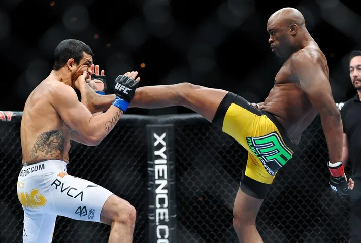

The GOAT Argument for Anderson Silva
Biography
Anderson Silva is a retired Brazilian mixed martial artist, widely regarded as one of the greatest fighters in MMA history. Known for his incredible striking ability, unorthodox style, and dominance in the UFC, Silva made a significant impact on the sport of MMA, particularly in the middleweight division.Early Life:
Anderson da Silva was born on April 14, 1975, in São Paulo, Brazil. He grew up in a tough neighborhood, where he was exposed to various martial arts disciplines. Silva initially practiced taekwondo at a young age, and later, he also trained in Brazilian jiu-jitsu (BJJ). His passion for martial arts grew throughout his youth, and he began to pursue it more seriously as a career.Early Career:
Silva made his professional MMA debut in 1997, competing in several Brazilian promotions. He showed promise early on with his striking, which was influenced by his training in taekwondo and his strong base in BJJ. Silva's first few years in MMA saw him compete in a variety of organizations, including Shooto Brazil and PRIDE Fighting Championships, where he gained valuable experience and developed his style.UFC Career:
Anderson Silva made his UFC debut on June 28, 2006, at UFC Fight Night 5, where he faced Chris Leben. Silva won the fight in a spectacular manner, knocking Leben out in the first round. This impressive performance quickly earned him a title shot against Rich Franklin, the reigning UFC Middleweight Champion. Silva’s fight against Franklin at UFC 64 on October 14, 2006, marked the beginning of his legendary UFC career. He defeated Franklin via TKO in the first round, capturing the UFC Middleweight Championship. Silva's reign as champion would last for a record-breaking 2,457 days and 10 title defenses, a UFC record that still stands.UFC Dominance:
Silva’s reign as champion was characterized by his extraordinary skills and ability to finish opponents with precision. He became known for his elusive footwork, devastating knockout power, and ability to dismantle opponents with ease. His most famous performances include victories over notable fighters such as: Dan Henderson (UFC 82), Rich Franklin (UFC 77, UFC 93), Nate Marquardt (UFC 73), Forrest Griffin (UFC 101), and Chael Sonnen (UFC 117).Style and Influence:
Silva was known for his unpredictable and unorthodox style, often toying with his opponents inside the octagon. He was a master of striking, incorporating elements of Muay Thai, taekwondo, and boxing into his fighting approach. His ability to control the distance and avoid damage while landing clean, precise strikes made him a difficult opponent for anyone. His defensive skills, including head movement and the ability to slip punches, were also notable. Silva was able to read his opponents’ movements and bait them into dangerous situations. His ability to finish fights with both hands, knees, and kicks made him a feared knockout artist. End of Reign and Later Career: Silva’s long reign came to an end in 2013 when he faced Chris Weidman at UFC 162. Silva was knocked out in the second round, ending his undefeated streak in the UFC. This loss shocked the MMA world, as Silva had been dominant for so long. He would go on to face Weidman in a rematch at UFC 168, but Silva suffered a gruesome leg injury in the second round, breaking his tibia and fibula in a freak accident. This injury kept him sidelined for over a year. Silva returned to the octagon in January 2015, but his career post-injury was marred by a loss to Michael Bisping and a controversial decision victory over Nick Diaz (UFC 183), in which Silva tested positive for performance-enhancing drugs. This led to a suspension and a tarnished reputation in the eyes of some fans and critics.Legacy:
Despite the setbacks later in his career, Anderson Silva's place in MMA history is secure. He holds multiple records, including the longest title defense streak in UFC history, with 10 consecutive title defenses. Silva was inducted into the UFC Hall of Fame in 2021. Silva’s legacy extends beyond just his accomplishments inside the cage. He was a trailblazer for Brazilian fighters in the UFC, paving the way for many others from his country to reach success on the global stage. His impact on the sport can still be felt today, as his unique fighting style and ability to captivate fans set new standards for what was possible in MMA. Post-Retirement: After retiring from MMA in 2020, Silva ventured into professional boxing, making his debut on June 19, 2021, against former world champion Julio César Chávez Jr. Silva won the fight in a split decision, proving that his skills in combat sports transcended MMA. He has continued to train and maintain his physical fitness, occasionally participating in exhibition matches. Anderson Silva remains a beloved figure in mixed martial arts, admired for his sportsmanship, creativity, and contributions to the sport. Feel free to check out the interactive graph below to visualize just how incredible his win streak was.
Check out this video to see some of Anderson Silva's highlight reel!
Jump to top